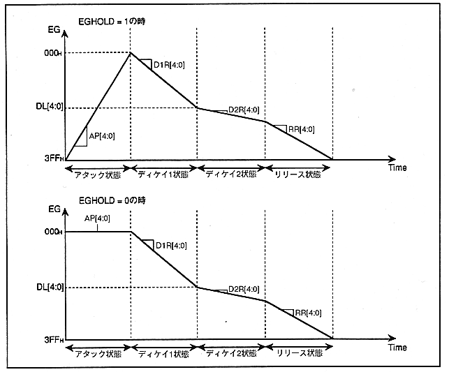

Return to previous page ｜ Return to menu ｜ Go to next page
- Figure 4.14 Change in attenuation

- D1R [4: 0] (R / W); Decay-1 Rate
- Specify the amount of EG change in Decay 1 state.
When "D1R" = "00H", change (level attenuation) is minimum (0)
When "D1R" = "1FH", change (level attenuation) maximum (MAX)
- D2R [4: 0] (R / W); Decay-2 Rate
- Specify the amount of EG change in Decay 2 state.
When "D2R" = "00H", change (level attenuation) is minimum (0)
When "D2R" = "1FH", change (level attenuation) maximum (MAX)
Return to previous page ｜ Return to menu ｜ Go to next page